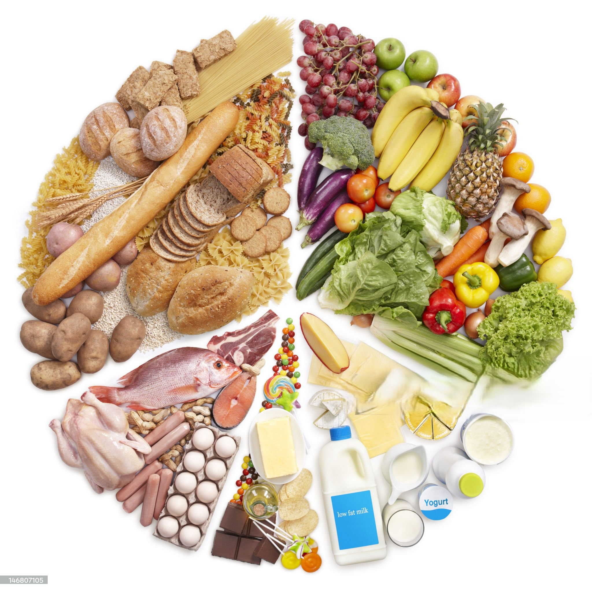

|

Adoptar una dieta equilibrada es la base de un estilo
de
vida saludable. No se trata solo de perder peso, sino de nutrir el cuerpo con todo
lo
que necesita para funcionar de manera óptima. Descubre cómo este cambio en tu
alimentación puede transformar tu energía y salud a largo plazo.
1. Mejora Significativa de los Niveles de Energía
Al consumir una mezcla adecuada de macronutrientes (carbohidratos complejos,
proteínas
magras y grasas saludables), evitas los picos y caídas de azúcar en la sangre que
causan fatiga. Un suministro constante de glucosa de liberación lenta te mantiene
activo y concentrado durante todo el día. Ejemplo: Reemplaza el pan blanco por
cereales integrales en el desayuno.
[Image of balanced meal plate]
2. Fortalecimiento del Sistema Inmunológico
Una dieta rica en vitaminas (como la C y E), minerales (como el zinc y el selenio) y
antioxidantes actúa como un escudo protector. Estos nutrientes son esenciales para
la
producción y activación de las células inmunes que combaten infecciones y
enfermedades. El 70% de nuestras defensas residen en el intestino, lo que
subraya la importancia de una flora intestinal saludable.
3. Mantenimiento de un Peso Corporal Saludable
Las dietas equilibradas se centran en alimentos ricos en fibra y volumen (frutas,
verduras, legumbres) que proporcionan saciedad con menos calorías. Esto facilita la
gestión del peso y reduce el riesgo de obesidad y enfermedades asociadas. La fibra
también ayuda a regular el tránsito intestinal y a eliminar toxinas.
4. Mejora de la Salud Cardiovascular
Limitar la ingesta de grasas saturadas y sodio, mientras se aumenta el consumo de
pescado azul (omega-3) y fibra, ayuda a mantener niveles saludables de colesterol y
presión arterial, protegiendo así el corazón y las arterias.
|
Tip HealthSync: ¡Incorpora aguacate y nueces a tu dieta diaria! Son
fuentes excelentes de grasas monoinsaturadas beneficiosas para el
corazón.
|
5. Impacto Positivo en el Estado de Ánimo y la Función
Cerebral
La relación entre el intestino y el cerebro es directa. Alimentos ricos en
probióticos
y vitaminas del grupo B no solo optimizan la digestión, sino que también influyen en
la producción de neurotransmisores clave como la serotonina, mejorando el estado de
ánimo y la claridad mental.
|